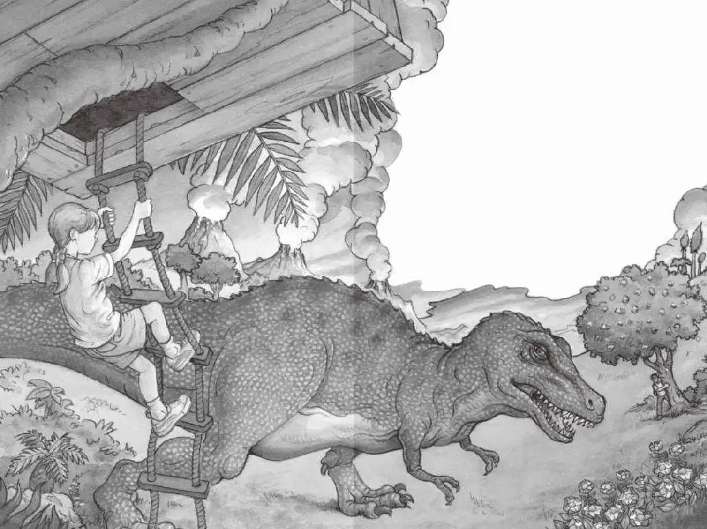

杰克闪身跳到树的后面。
他心脏跳得太快了，根本无法思考。
他探头看了看那头巨大的怪兽，它可怕的大嘴巴一开一合，嘴里的牙齿像切牛排的刀那么锋利。
“别紧张，”杰克想，“动动脑筋。”
他朝下面的山谷望了望，心想：“太好了，鸭嘴龙都在小心守护着它们的窝。”
杰克又回头看看霸王龙，心想：“太好了，它似乎还没发现我的存在。”
“别紧张，好好想一想，也许在书里可以找到什么。”杰克打开恐龙书，找到了雷克斯霸王龙那一页。他读道：
雷克斯霸王龙是历史上最大的陆地肉食性动物。
如果它活到今天，一口就可以吃掉一个人。
“什么嘛，这本书根本帮不上忙。”杰克心想。
杰克拼命地转动脑筋：“我不能躲到山谷下面，因为所有的鸭嘴龙可能都会跑来追我。我也不能跑向树屋，因为霸王龙可能跑得比我更快。好吧，也许我应该等霸王龙离开后再行动。”
杰克悄悄把头从树后探出来张望，只见霸王龙正慢慢地往山坡上移动。
突然，杰克看到了一件让他惊讶不已的事情——安妮正顺着绳梯往下爬呢！
“她疯了吗？她在干什么？”杰克满心疑惑。
杰克见安妮跳下了绳梯，匆匆跑向无齿翼龙。
她一边跟无齿翼龙说话，一边还挥动着自己的胳膊。
然后，她指指杰克，指指天空，又指指树屋。
“她真的疯了！”杰克想。
他小声冲着安妮喊：“快！快回到树屋上去！”
这时，杰克听见了一声咆哮。
雷克斯霸王龙正在朝他这边看。
杰克猛地扑倒在地。
霸王龙开始向山坡走来。

杰克感到整个大地都在颤抖。
“我该怎么办？”杰克问自己，“我要不要跑？我要不要爬到恐龙谷里去？或者爬到那棵树上？”
就在这时候，一个巨大的影子笼罩在了杰克身上。
他抬头一看，无齿翼龙正盘旋在他的头顶上方。
这只体形庞大的动物快速地向着山顶滑翔，朝杰克这边飞来。